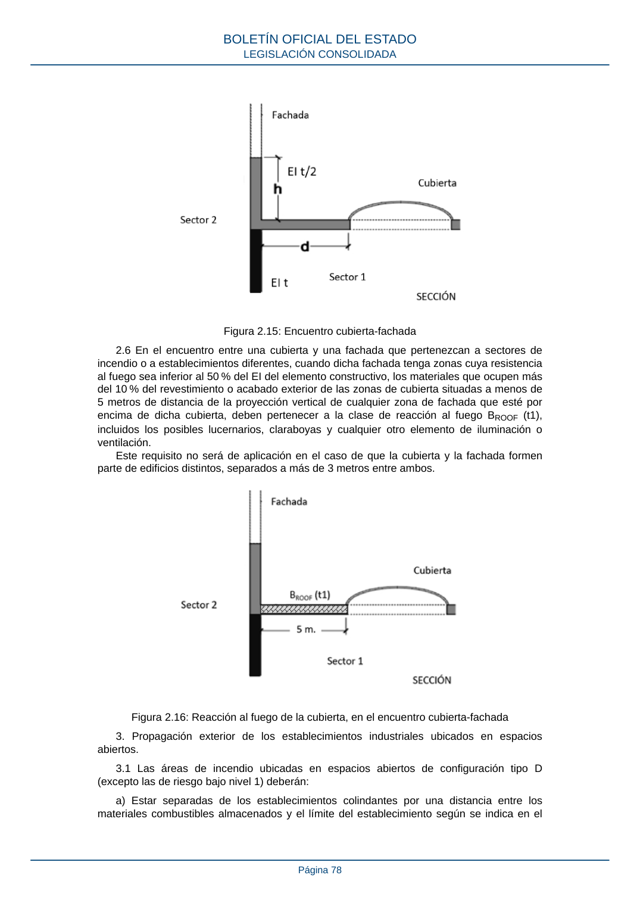

RSCIEI · edición 2025-04-10 · capa asociada
Documento RSCIEI-asociada · SHA-256 del PDF 85aa0af25d51e5b58d8975a4eefbf76d3f57a8933445cfe814ae9c4818a2e3e7
Página física 78 de 108.
Copia fiel del PDF fuente · Fuente oficial
Ficha de la disposición en la fuente oficial
Texto extraído y reorganizado: Basado en datos de la Agencia Estatal Boletín Oficial del Estado. PDF reproducido: Fuente de los datos: Agencia Estatal Boletín Oficial del Estado.
Formato: Texto de la página (Markdown)
Figura 2.15: Encuentro cubierta-fachada 2.6 En el encuentro entre una cubierta y una fachada que pertenezcan a sectores de incendio o a establecimientos diferentes, cuando dicha fachada tenga zonas cuya resistencia al fuego sea inferior al 50 % del EI del elemento constructivo, los materiales que ocupen más del 10 % del revestimiento o acabado exterior de las zonas de cubierta situadas a menos de 5 metros de distancia de la proyección vertical de cualquier zona de fachada que esté por encima de dicha cubierta, deben pertenecer a la clase de reacción al fuego BROOF (t1), incluidos los posibles lucernarios, claraboyas y cualquier otro elemento de iluminación o ventilación. Este requisito no será de aplicación en el caso de que la cubierta y la fachada formen parte de edificios distintos, separados a más de 3 metros entre ambos. Figura 2.16: Reacción al fuego de la cubierta, en el encuentro cubierta-fachada 3. Propagación exterior de los establecimientos industriales ubicados en espacios abiertos. 3.1 Las áreas de incendio ubicadas en espacios abiertos de configuración tipo D (excepto las de riesgo bajo nivel 1) deberán: a) Estar separadas de los establecimientos colindantes por una distancia entre los materiales combustibles almacenados y el límite del establecimiento según se indica en el BOLETÍN OFICIAL DEL ESTADO LEGISLACIÓN CONSOLIDADA Página 78
